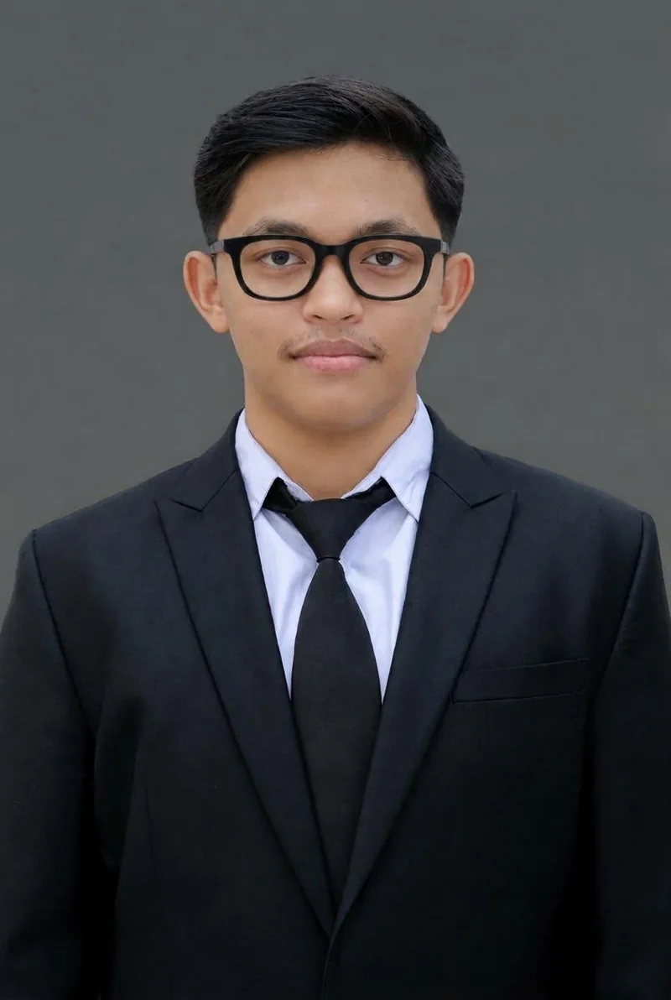
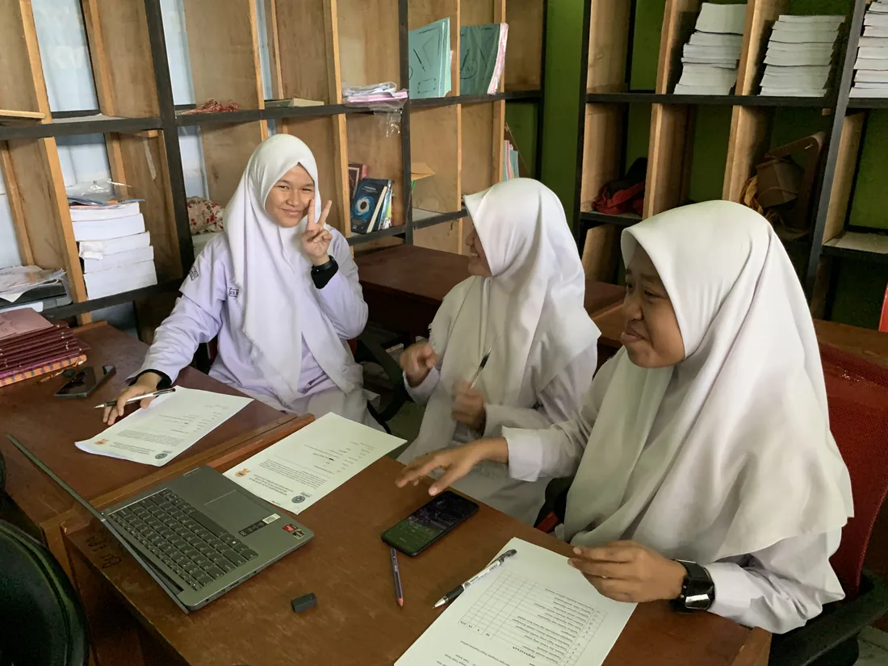
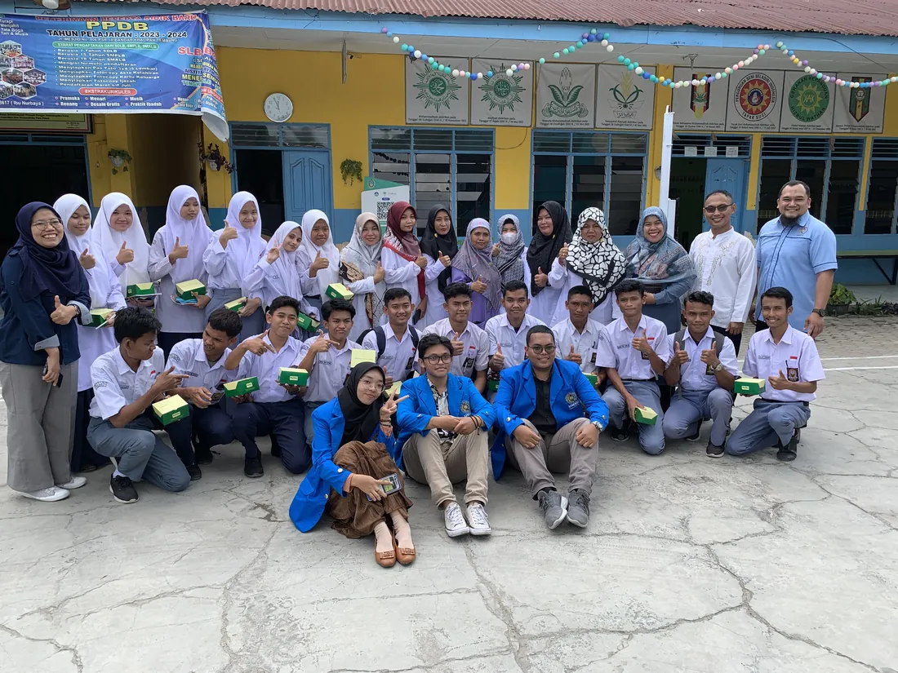
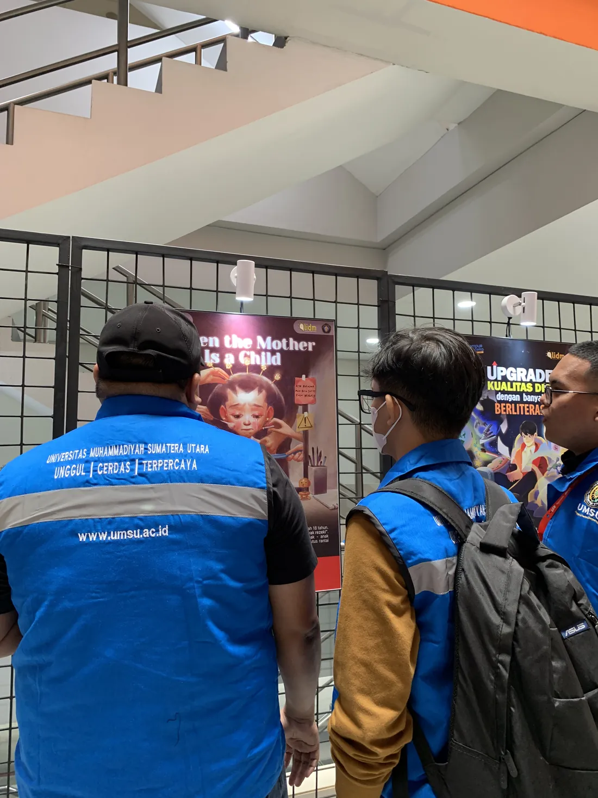
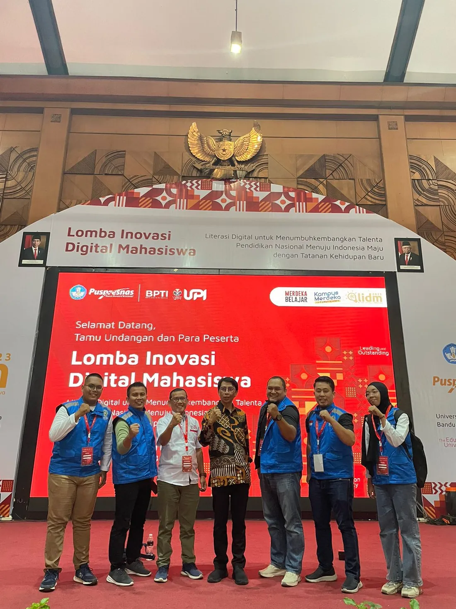
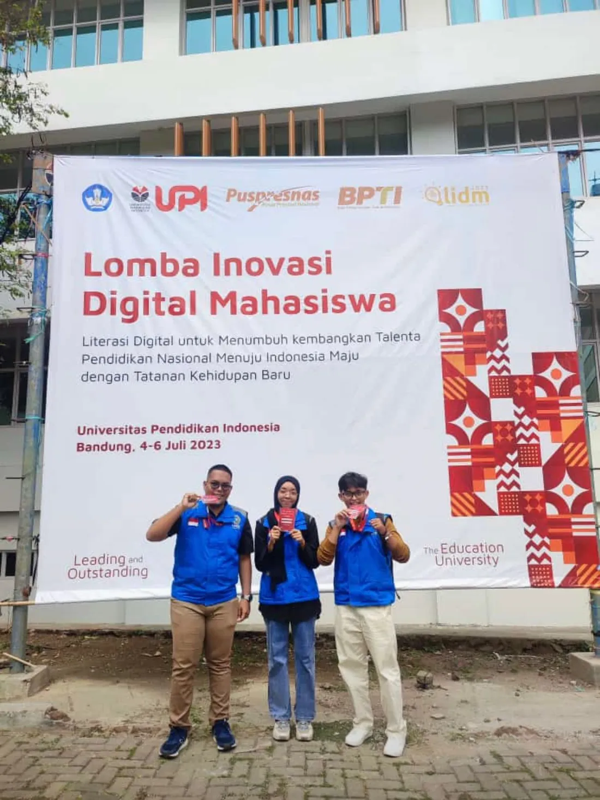
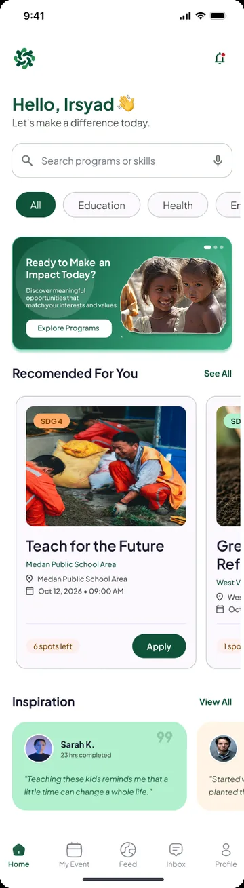
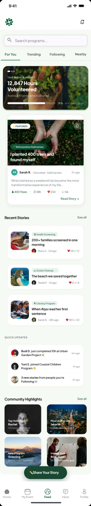
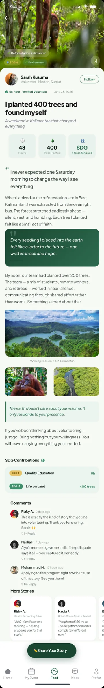

- 3.70 GPA, cum laude · UMSU
- LIDM 2023 National Finalist
- IBM AI Engineering & Data Science
AI, computer vision & assistive systems
Dul Kipli Kurniawan — AI & Assistive Technology Developer
I'm Dul Kipli Kurniawan, AI & Assistive Technology Developer
I build computer-vision and mobile tools for Indonesian Sign Language (BISINDO). My thesis project DEAFSAPP reached the national finals of LIDM 2023; today I work across AI engineering, data science and product design.

About
Building assistive AI that listens with its eyes, and proving it works with honest evaluation.
I studied Information Systems at Universitas Muhammadiyah Sumatera Utara (UMSU) and have worked across UI/UX design, Flutter development and AI application development. My thesis on BISINDO sign-language technology at SLB Melati Aisyah taught me that an accessible tool depends as much on careful evaluation as on working code.
In 2026 I completed the IBM AI Engineering and IBM Data Science professional certificates and built a reproducible forecasting project. I am looking for AI, computer vision or mobile engineering roles, and for a master's programme in Data Science, AI or Computer Science.
- Education
- S.Kom, Information Systems, UMSU · Oct 2019 – Aug 2023 · GPA 3.70 / 4.00, cum laude
- Languages
- Indonesian (native) · English, IELTS overall 5.5
- Based in
- Medan, North Sumatra, Indonesia
Featured project
DEAFSAPP
A Flutter app for learning and communicating in Indonesian Sign Language (BISINDO), made with Deaf students and their teachers at SLB Melati Aisyah, Medan.
The problem
Deaf and hard-of-hearing students and their hearing teachers had few practical BISINDO tools that run on an ordinary smartphone without sensor gloves. The 2023 recognition model and AR code were lost; the surviving V1 Flutter code is public on GitHub.





-
Camera input
The phone's camera records a person signing. No gloves or sensors: the goal was an ordinary smartphone.
Reported in thesis The public V1 code does not access the camera.
-
Landmark extraction
Each frame is reduced to MediaPipe hand and pose landmarks: a few dozen coordinates instead of a full image, so the model needs far less data and computation.
Reported in thesis
-
Temporal processing & gesture recognition
Landmark sequences over time are classified as one of 26 dynamic BISINDO signs. The test split and signer independence are undocumented, so the reported accuracy is not a measure of performance on new signers.
Reported in thesis
-
Accessible output & feedback
Recognised signs become text and speech. In the other direction, a hearing person's speech is transcribed live on screen. AR sign visualisation was part of the thesis design.
In public code speech-to-text Reported in thesis text & speech output Placeholder AR screen
Reported results
From the 2023 thesis. The evaluation data is not public.
76.1%
Recognition accuracy
26 dynamic sign sequences
76.5
Usability score
Instrument (SUS or % positive) being confirmed
17+8
Field-test participants
Students + teachers, one school
Finalist
LIDM 2023, national level
Puspresnas, Kemendikbudristek
Latest project · Design in progress (Figma)
VOLDO
A volunteer and social-impact app, formerly SUCARE
Three roles (volunteer, donor, organiser) plus an admin panel across 80+ Figma screens, designed to make grassroots programmes easier to find and join. A design project, not a built app.
- Figma
- UI/UX design
- Design system
- Role-based flows



- 01 · Home & discovery
Find a programme
Category filters, search and recommended programmes with SDG tags.
- 02 · Community feed
See the impact
Weekly impact summary, featured stories and quick updates from the community.
- 03 · Story detail
Read one story
Editorial layout with photos, impact figures and comments.
Screens are Figma exports; names and figures shown in them are sample content.
Selected work
Data, design & product
Each project is labelled with what it actually is: completed, in progress or conceptual.
-
1.0
Retail Demand Forecasting & Planning Buffers
Twelve-month forecasts for 110 Australian retail series (ABS data, 1982–2018). ETS cut mean MASE from 1.21 to 1.06 against a seasonal-naive baseline in rolling-origin tests; error-based buffers covered 82% of months against a 90% target.
-
2.0
VOLDO — volunteer & social-impact app
80+ Figma screens for three roles and an admin panel: user flows, role architecture and a consistent design system.
-
3.0
SPASI — café-based productivity & community platform
Formerly RUANGI·JO. A product concept for young urban Indonesians who work and study from cafés: brand identity, mobile UI screens, and a product blueprint with MoSCoW-prioritised requirements and an accessibility review.
-
4.0
Pangkasin.Id — barber-booking app
UI/UX for a student startup under Wirausaha Merdeka, the national student entrepreneurship programme: user research, high-fidelity wireframes, prototypes and visual guidelines.

“Accessible technology is only as good as the evidence behind it.”
That is why every number on this page says where it comes from, and every project says whether it is built, designed or still a concept.
Experience
Work & research
-
2022 – 2023 · Thesis & community service, Medan
Lead Software Developer — DEAFSAPP
- Developed a Flutter app for BISINDO learning and communication with SLB Melati Aisyah.
- Integrated gesture recognition, speech-to-text and AR sign visualisation in the thesis-stage system.
- Field-tested the app with 17 students and 8 teachers at the school.
-
2022 · Internship · Codinglab.id (software house), Medan
UI/UX Designer & AI Application Developer Intern
- Designed responsive interfaces and user flows in Figma for client web applications.
- Assisted engineers integrating machine learning models into web and mobile back ends.
- Took part in requirement gathering, sprint planning and design iteration with clients.
-
2022 · Wirausaha Merdeka programme, Medan
UI/UX Designer — Pangkasin.Id
- Conducted user research and designed high-fidelity prototypes for a barber-booking platform.
-
2019 – 2023 · Student organisations, UMSU
HIMASI (Research & Technology) and IMM (Community Empowerment)
- Organised IT literacy workshops at schools and orphanages; hosted faculty technology seminars as master of ceremonies.
Publication
Kurniawan, D. K. (2022). Pengaruh Kecanduan Game Online pada Remaja terhadap Perkembangan Psikolog Anak dengan Tingkat Kecemasan Orang Tua. Jurnal Penelitian, Pendidikan dan Pengajaran (JPPP), 3(2).
On how online game addiction among adolescents relates to child psychological development and parental anxiety. Sole author.
doi.org/10.30596/jppp.v3i2.10835Achievements
- National Finalist, LIDM 2023, Inovasi Teknologi Digital Pendidikan division, Puspresnas. Finals at Universitas Pendidikan Indonesia, 4–6 July 2023.
- Registered copyright for DEAFSAPP, No. EC00202341333, DJKI (2023), co-creator.
- 3rd place, University Logic Debate Competition, UMSU (2022).
Certificates
- IBM AI Engineering Professional Certificate, Coursera, 13 courses, Oct 2026 Verify on CourseraCertificate PDF
- IBM Data Science Professional Certificate, Coursera, 12 courses, Oct 2026 Verify on CourseraCertificate PDF
- Kaggle Learn: Computer Vision and Intermediate Machine Learning, Sept 2026 Computer Vision certificateIntermediate ML certificate
Capabilities
Technical & Design Stack
Algorithmic vision, human-centred design and accessible cross-platform software. “Coursework” marks skills practised in certificate labs, not yet in a shipped project.
Software Engineering
Core stack- PythonData science, ML
- Flutter & DartMobile apps (GetX, Rive)
- JavaScriptWeb front end, basic Node.js
- PHP & MySQLRelational databases
- Git & GitHubVersion control
UI/UX & 3D Modeling
Human experience- FigmaDesign systems, 80+ screens
- User researchPangkasin.Id, prototyping
- Usability testingField study, 25 participants
- Product docsPRD, MoSCoW
- Blender 3D3D modeling
AI & Assistive Tech
Vision & data- MediaPipeHand & pose landmarks (thesis)
- PyTorch & KerasDeep learning (coursework)
- Computer visionKaggle certificate
- scikit-learn & statsmodelsForecasting project
- LLMs, LangChain & RAGIBM coursework
- AccessibilityWCAG-informed design
Languages & Comms
Communication- IndonesianNative speaker
- EnglishIELTS overall 5.5
- Academic writingJournal article, 2022
- Public speakingDebate 3rd place, MC
Get in touch
Speak directly
Open to full-time roles, freelance UI/UX and app development, research collaboration, and master's programme enquiries.
- Emaildkiplikurniawan@gmail.com
- WhatsApp+62 823-6076-0559
- ProfilesLinkedInGitHub
- LocationMedan, North Sumatra, Indonesia (UTC+7)
Send a message
All fields are required. If delivery can't be confirmed, you'll get a ready-to-send email instead.
Message sent
Thank you. I usually reply within a few days.